Tema 3.A.15
La empresa: el tamaño eficiente y sus límites. Mención especial de la economía de los costes de transacción. La Teoría de la Organización Industrial: barreras a la entrada y mercados impugnables.
Tamaño eficiente y límites de la empresa, Coase, Williamson y Hart, gerencialistas y agencia, barreras a la entrada, precio límite y mercados impugnables.
Introducción
Enganche:
En 1931, un estudiante de 20 años de la London School of Economics, Ronald Coase, cruzó el Atlántico con una beca de viaje para averiguar por qué las industrias de Estados Unidos se organizaban de formas tan distintas. Le inquietaba una paradoja. Sus profesores le enseñaban que el sistema de precios coordina toda la economía, y muchos economistas occidentales sostenían que la planificación central, la economía soviética que según Lenin funcionaría como una gran fábrica, era imposible. Y, sin embargo, en Occidente había fábricas, algunas enormes: pequeñas economías planificadas que funcionaban dentro del mercado (Coase, 1991).
Detrás está la pregunta de esta exposición: si el mercado coordina tan bien, ¿por qué existen las empresas? Y si dentro de una empresa se planifica con éxito, ¿por qué no se organiza toda la economía como una sola empresa? Coase encontró la respuesta en el verano de 1932, y con ella abrió la caja negra de la empresa.
La respuesta de la microeconomía parte del individualismo metodológico:1 explica los fenómenos agregados a partir de las decisiones de individuos que optimizan [ver tema 3.A.8].
Para comprender y predecir el funcionamiento de los mercados, la microeconomía estudia 2 agentes, consumidores y productores:2 los consumidores eligen qué consumir sujetos a su restricción presupuestaria, y los productores transforman factores (inputs) en productos (outputs). Las decisiones de los productores están restringidas por aspectos:
técnicos: cómo se combinan los factores de forma eficiente, dada una tecnología, que estudia la teoría de la producción [ver tema 3.A.11];
de costes: cuál de las combinaciones técnicamente eficientes es la más barata, que estudia la teoría de los costes [ver tema 3.A.12];
organizativos y de mercado: el tamaño y los límites de la empresa (esta exposición) y el mercado en el que vende y compra [ver tema 3.A.16] [ver tema 3.A.17] [ver tema 3.A.18] [ver tema 3.A.19].
La empresa es la unidad que organiza la producción: reúne factores bajo una dirección común y vende lo que produce en el mercado. La teoría neoclásica la trata como una caja negra: sabemos qué entra en ella y qué sale, pero no qué ocurre dentro, ni por qué existe, ni dónde termina.
Relevancia:
Teórica: el premio Nobel de Economía ha reconocido 6 veces este campo (traducciones propias de las motivaciones oficiales): a Herbert Simon en 1978, «por su investigación pionera sobre el proceso de toma de decisiones en las organizaciones económicas» (The Nobel Prize, 1978); a George Stigler en 1982, «por sus estudios fundamentales de las estructuras industriales, el funcionamiento de los mercados y las causas y los efectos de la regulación pública» (The Nobel Prize, 1982); a Ronald Coase en 1991, «por su descubrimiento y aclaración de la importancia de los costes de transacción y de los derechos de propiedad para la estructura institucional y el funcionamiento de la economía» (The Nobel Prize, 1991); a Oliver Williamson en 2009, «por su análisis de la gobernanza económica, en especial de los límites de la empresa», justo el epígrafe con el que empieza el título (The Nobel Prize, 2009);3 a Jean Tirole en 2014, «por su análisis del poder de mercado y la regulación» (The Nobel Prize, 2014), y a Oliver Hart y Bengt Holmström en 2016, «por sus contribuciones a la teoría de los contratos» (The Nobel Prize, 2016).
Empírica: la mayor parte de la actividad económica no se coordina con precios, sino dentro de organizaciones. Un observador que viera las empresas como manchas verdes y las transacciones de mercado como líneas rojas que las unen hablaría de una economía de organizaciones más que de una economía de mercado (Simon, 1991). Y el peso de las grandes empresas crece: con datos de empresas cotizadas de Estados Unidos, el precio medio pasó de estar un 21 % por encima del coste marginal en 1980 a un 61 % en 2016 (De Loecker, Eeckhout y Unger, 2020), y la concentración de las ventas en empresas «superestrella» explica buena parte de la caída de la participación de los salarios en la renta (Autor et al., 2020).
De política económica: la defensa de la competencia (control de concentraciones, abuso de posición dominante, acuerdos verticales) y la regulación de las industrias de red se apoyan en esta teoría [ver tema 3.A.20] [ver tema 3.B.39] [ver tema 4.A.15].
Contextualización:
La teoría neoclásica trata a la empresa como un agente que transforma factores en productos con una tecnología dada [ver tema 3.A.11] [ver tema 3.A.12] y que se mueve en una estructura de mercado dada [ver tema 3.A.16]. Esa representación descansa en 3 supuestos que esta exposición levanta, uno en cada apartado:
la empresa es un agente único que maximiza el beneficio, aunque la dirijan personas distintas de sus propietarios: se levanta en el apartado I;
la empresa es una caja negra, una función de producción, y no importa cómo se organizan los intercambios dentro y fuera de ella: se levanta en el apartado II;
la empresa opera en una estructura de mercado dada, que su conducta no puede alterar: se levanta en el apartado III.
Desde un punto de vista histórico, en los años 30 se abren los 3 frentes, en ese mismo orden:
en los objetivos, Berle y Means (1932) documentan la separación entre la propiedad y el control en la gran sociedad anónima, y Simon (1955) sustituirá después la racionalidad perfecta por la racionalidad limitada [ver tema 3.A.1];
en la organización, Coase (1937) pregunta por qué existen las empresas y responde con los costes de transacción; sus ideas esperan casi 40 años, hasta que Williamson (1975) las hace operativas;
en el mercado, Chamberlin (1933) y Joan J. Robinson (1933) estudian mercados que no son ni competencia perfecta ni monopolio y separan la organización industrial de la teoría de los precios [ver tema 3.A.18].
La teoría de la información [ver tema 3.A.13] y la teoría de juegos [ver tema 3.A.14] dan después las herramientas de la teoría de los contratos y de la Nueva Teoría de la Organización Industrial.
La Teoría de la Organización Industrial (TOI) estudia el funcionamiento de los mercados en los que la competencia es imperfecta, la conducta de las empresas en ellos y sus efectos sobre el bienestar. En sentido amplio, incluye también la teoría de la empresa (por qué existe, dónde están sus fronteras, cómo se organiza por dentro) (Tirole, 1988, introducción); el título separa las 2 partes y la exposición las sigue en ese orden.4
Problemática (preguntas clave):
Si el mercado asigna bien los recursos, ¿por qué existen las empresas? ¿Por qué unas transacciones se hacen dentro de una jerarquía y otras en el mercado?
¿Qué fija el tamaño eficiente de una empresa? Y, si crecer ahorra costes, ¿qué le impide crecer sin límite?
¿Persiguen las empresas el beneficio cuando las dirigen personas distintas de sus propietarios?
¿De qué depende el poder de mercado: del número de empresas o de la facilidad para entrar? ¿Pueden las empresas instaladas impedir la entrada, y basta la amenaza de entrada para disciplinarlas?
Estructura: la exposición abre la caja negra de dentro hacia fuera, en el orden del título.
En primer lugar, el tamaño eficiente y sus límites (I): qué tamaño dicta la tecnología y qué lo limita cuando quienes dirigen la empresa no son sus dueños.
En segundo lugar, la mención especial, la economía de los costes de transacción (II): por qué existe la empresa y dónde están sus fronteras, de Coase a Williamson y a Grossman, Hart y Moore.
Por último, la Teoría de la Organización Industrial (III): cómo pasa la empresa de tomar la estructura del mercado como dada a influir en ella, con las barreras a la entrada y los mercados impugnables.
3.A.15. La empresa: tamaño eficiente, costes de transacción y organización industrial
Introducción
I. La empresa: el tamaño eficiente y sus límites
1. Enfoque tecnológico: escala mínima eficiente \(\overline{q}\), subaditividad, alcance
2. Límites internos: dirección, gerencialistas (\(\underline{B}\)), agencia
II. La economía de los costes de transacción
1. Coase (1937): la frontera en el margen
2. Williamson: especificidad \(a\) y estructuras de gobierno
3. Grossman, Hart y Moore: contratos incompletos y propiedad
4. Otros enfoques e implicaciones de política económica
III. La TOI: barreras a la entrada y mercados impugnables
1. Del enfoque neoclásico a Harvard y Chicago
2. Barreras a la entrada: precio límite y compromiso
3. Mercados impugnables
4. La Nueva TOI
Conclusión
Reparto del cante: introducción, 2′30″; I, 7′ (I.1, 3′; I.2, 4′); II, 9′30″ (II.1, 2′; II.2, 3′30″; II.3, 2′30″; II.4, 1′30″); III, 10′ (III.1, 2′30″; III.2, 3′30″; III.3, 2′30″; III.4, 1′30″), y conclusión, 1′. La «mención especial» del título (II) y el epígrafe con 2 conceptos (III) se llevan más tiempo; el bloque I es el más corto porque su núcleo técnico (costes, subaditividad, alcance) se resume y se remite. Un hilo recorre la exposición: cada bloque levanta uno de los 3 supuestos de la caja negra, y la conclusión responde a la pregunta de Coase del enganche. Gráficos imprescindibles en la pizarra: la maximización de las ventas de Baumol (I.2.2), el margen de Coase (II.1), los costes de gobierno de Williamson (II.2), el precio límite y el árbol de disuasión (III.2). Funciones clave que se quedan en una esquina de la pizarra: la condición de Coase (2), desde II.1 hasta la conclusión, porque la idea final vuelve a ella; la elección de la estructura de gobierno (3), hasta el final del bloque II; el precio límite (4), durante III.2, y la configuración sostenible (5), desde III.3 hasta la conclusión. Conviene escribir este esquema en la pizarra al empezar.
Para empezar: Ha-Joon Chang, «Production», en la serie Economics for People (vídeo, https://youtu.
I. La empresa: el tamaño eficiente y sus límites
En el cante: el tamaño eficiente (escala mínima eficiente, número de empresas que caben en el mercado, subaditividad y alcance con sus fórmulas), la evidencia en una frase con el dato de España y el puzle que deja abierto el enfoque tecnológico (3′); la dirección como factor fijo y la separación entre propiedad y control, Baumol con su gráfico, Williamson (1964) y Marris en una frase cada uno, la ineficiencia X como bisagra y la relación de agencia con los costes de agencia y la disciplina del mercado (4′). Los gráficos de costes (forma en L, subaditividad, alcance) son de apoyo: su tema es el [ver tema 3.A.12]. Son de profundización la pérdida de control con su fórmula, el gráfico de Williamson (1964), Marris en detalle, la ley de Gibrat y la distribución de Zipf y el gobierno corporativo en España (anexo D).
Empezamos por el primer supuesto de la caja negra: la empresa es un agente que maximiza el beneficio con una tecnología dada. Conclusión anticipada: la tecnología fija un tamaño eficiente mínimo, pero no un máximo; los límites al tamaño vienen de dentro de la empresa, de la dirección y de los incentivos de quienes la gobiernan.
I.1. El enfoque tecnológico: el tamaño eficiente
a) Idea
Para la teoría neoclásica, la empresa es una tecnología: un conjunto de posibilidades de producción [ver tema 3.A.11] del que se deriva una función de costes \(C(\vec{w},q)\) [ver tema 3.A.12]. Su tamaño eficiente es el que minimiza el coste por unidad, y la configuración eficiente de la industria, la que produce la cantidad demandada al menor coste total.
Pese a ser un reduccionismo, este enfoque explica 3 cosas: el tamaño de la empresa, la configuración de la industria y el grado de integración.
b) Modelo
i) Supuestos
Empresas con la misma tecnología, que minimizan costes y toman como dados los precios de los factores, \(\vec{w}\).
Una demanda de mercado \(x(p)\) y, a largo plazo, libre entrada y salida.
ii) Desarrollo
Tamaño eficiente de la empresa: la escala mínima eficiente, \(\overline{q}\), es el menor nivel de producción con el que se alcanza el coste medio mínimo a largo plazo, \(\overline{c}=C(\overline{q})/\overline{q}\). Por debajo hay economías de escala (\(\mathrm{CMg}<\mathrm{CMe}\)); por encima, si las hay, deseconomías [ver tema 3.A.12].
Si el coste medio tiene forma de U, hay un único tamaño eficiente. Los estudios empíricos encuentran con frecuencia costes medios en forma de L: decrecientes hasta \(\overline{q}\) y casi constantes después, de modo que hay una horquilla de tamaños eficientes (gráfico 1) (Bain, 1956; Stigler, 1958).5
Configuración eficiente de la industria: con libre entrada y coste medio en U, cada empresa produce \(\overline{q}\) al precio \(p^{*}=\overline{c}\), y el número de empresas es \(J^{*}=x(\overline{c})/\overline{q}\) [ver tema 3.A.16]. Lo que decide la estructura es el tamaño eficiente relativo a la demanda:
si \(\overline{q}\) es pequeña frente a \(x(\overline{c})\), caben muchas empresas eficientes y la competencia es posible;
si es grande, solo caben unas pocas (oligopolio natural) [ver tema 3.A.19];
si la función de costes es subaditiva en la producción relevante, producir todo en una sola empresa es lo más barato: \[\tag{1} C\Big(\sum_{j=1}^{J}q_j\Big)<\sum_{j=1}^{J}C(q_j)\qquad\text{para todo reparto } (q_1,\dots,q_J),\] con la misma función de costes \(C(\cdot)\) para todas las empresas: es la definición de monopolio natural (Baumol, 1977). Las economías de escala en todo el tramo la garantizan, pero no son necesarias (gráfico 2) [ver tema 3.A.17].
Alcance de la empresa: con varios productos, hay economías de alcance si producirlos juntos es más barato que por separado, \[C(q_1,q_2)<C(q_1,0)+C(0,q_2),\] por factores compartidos: factores públicos, que, una vez usados para un producto, sirven para otro sin coste adicional (una red, una marca, un conocimiento), o factores que se pueden repartir entre varios productos, como el capital (gráfico 3) (Panzar y Willig, 1981) [ver tema 3.A.12].
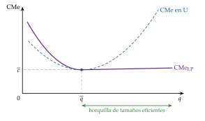
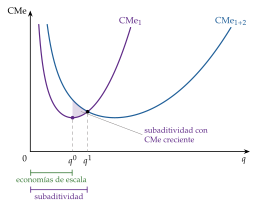
Fuente: elaboración propia a partir de Baumol, Panzar y Willig (1982).
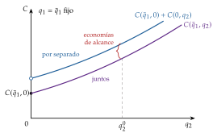
Fuente: elaboración propia a partir de Baumol, Panzar y Willig (1982).
iii) Implicaciones
El tamaño eficiente es el que aprovecha las economías de escala y de alcance. La tecnología explica así la integración horizontal (escala), la diversificación (alcance) y la existencia de monopolios naturales (subaditividad).
En definitiva, la estructura de costes y la demanda determinan el tamaño de la empresa, la configuración de la industria y el grado de integración.
c) Evidencia empírica
Escala mínima eficiente: con la técnica del superviviente (los tamaños eficientes son los que ganan cuota con el tiempo), Stigler (1958) encuentra en muchas industrias una horquilla amplia de tamaños eficientes, coherente con costes medios en forma de L.
Distribución de tamaños: muy asimétrica, con muchas empresas pequeñas y pocas muy grandes.
En España había 3,31 millones de empresas activas a 1 de enero de 2025; el 54,4 % no tenía asalariados y solo el 2,3 % tenía 20 o más (Instituto Nacional de Estadística, 2025). Y el tamaño importa para la productividad: en 2024, el valor añadido por ocupado de las grandes empresas (71.900 euros) era 1,7 veces el de las microempresas (42.800 euros); en la UE-27, 2,1 veces en 2023 (Eurostat, 2026).
La ley de Gibrat (el crecimiento de una empresa es independiente de su tamaño) explica esa asimetría como resultado de perturbaciones multiplicativas (Gibrat, 1931); se cumple aproximadamente para las empresas grandes, mientras que las pequeñas y jóvenes crecen más deprisa (Sutton, 1997) [ver tema 3.B.4]. En Estados Unidos, el tamaño de las empresas sigue una distribución de Zipf (Axtell, 2001).
Tendencia reciente: la cuota de las mayores empresas de cada sector ha crecido. Autor et al. (2020) lo atribuyen a empresas «superestrella», más productivas, en mercados en los que el ganador se lleva la mayor parte (tecnologías digitales, efectos de red); otros, a más barreras a la entrada y menos competencia (Philippon, 2019). Es la pregunta del bloque III.
d) Valoración
El enfoque explica el tamaño de la planta, no el de la empresa: una empresa puede tener muchas plantas, y muchas empresas grandes reúnen actividades sin economías técnicas entre ellas.
Además, no explica por qué las economías de escala y de alcance tienen que aprovecharse dentro de una empresa y no con contratos entre empresas jurídicamente independientes: 2 productores podrían compartir un factor alquilándolo, o un proveedor abastecer a varios clientes con contratos a largo plazo (Teece, 1980). ¿Por qué se integran, entonces? La respuesta exige mirar los costes de usar el mercado (II). Antes, veamos por qué la empresa no crece sin límite.
I.2. Objetivo y funcionamiento de la empresa: los límites internos
Una vez visto qué tamaño dicta la tecnología, pasamos a lo que lo frena. Si producir en grande es más barato, ¿qué impide que una empresa crezca sin límite? La respuesta está en quién dirige la empresa, con qué objetivos y con qué incentivos.
I.2.1. El enfoque neoclásico: la dirección como factor fijo
Los rendimientos decrecientes de la dirección: para Kaldor (1934) y E. A. G. Robinson (1934), el factor fijo de la empresa a largo plazo es la capacidad de coordinación del empresario. Al crecer, cada decisión adicional se toma peor o más despacio, y el coste medio acaba subiendo. Coase (1937) lo llama rendimientos decrecientes de la función empresarial y lo convierte en el límite de la empresa (II.1).
Penrose (1959) lo traslada del tamaño al crecimiento: los directivos que ya están en la empresa tienen que formar e integrar a los nuevos, de modo que la capacidad de dirección limita la velocidad a la que una empresa puede crecer de forma rentable (el efecto Penrose), aunque no fije un tamaño máximo [ver tema 3.B.4].
La pérdida de control en la jerarquía: Williamson (1967) formaliza el límite. Si cada nivel de la jerarquía solo transmite al siguiente una fracción \(\alpha\in(0,1)\) de las intenciones de su superior, en una empresa con \(N\) niveles a la base solo llega la fracción \(\alpha^{N-1}\): la pérdida de control crece de forma geométrica con el número de niveles. Aunque los costes de administración crezcan solo en proporción al tamaño, la pérdida acumulada de control da un tamaño óptimo finito.
La separación entre la propiedad y el control: hasta aquí hemos supuesto que la empresa es un ente homogéneo, en cuyo seno todos los intereses coinciden y se maximiza el beneficio. Pero en la gran sociedad anónima la propiedad está repartida entre muchos accionistas y el control lo ejercen los directivos (Berle y Means, 1932), y sus objetivos pueden no coincidir:
el propietario (el principal) quiere maximizar su beneficio;
el directivo (el agente) quiere maximizar su utilidad, que depende de su retribución, de la influencia que le da dirigir la empresa, del prestigio y del tamaño de esta.6
Las teorías gerenciales y la teoría de la agencia estudian ese conflicto.
I.2.2. El enfoque directivista o gerencialista
a) Idea
Los primeros modelos de una empresa con objetivos distintos del beneficio, en los años 50 y 60, sustituyen ese objetivo por el de los directivos (ventas, prestigio, emolumentos, seguridad, crecimiento), sujeto a que los accionistas reciban un beneficio mínimo, \(\underline{B}\), que les evite vender sus acciones o cambiar de equipo directivo.
b) Modelo
i) Supuestos
Separación entre propiedad y control: los directivos deciden y maximizan su propio objetivo.
Los accionistas solo exigen el beneficio mínimo \(\underline{B}\); por lo demás, la información es perfecta y simétrica, como en la teoría neoclásica.
ii) Desarrollo
Maximización de los ingresos por ventas (Baumol, 1958, 1959): los directivos asocian su remuneración, su poder y su prestigio a la cifra de ventas más que al beneficio, y los accionistas, los prestamistas y los trabajadores ven en la evolución de las ventas un buen indicador de la gestión. La empresa maximiza su ingreso total sujeta al beneficio mínimo: \[\begin{array}{rl}\displaystyle \max_{q} & \displaystyle I(q)=p(q)\,q \\ \text{s.a.} & B(q)=I(q)-C(q)\geq\underline{B}\end{array}\]
si, en el máximo del ingreso (\(\mathrm{IMg}=0\)), el beneficio todavía supera \(\underline{B}\), la restricción no es activa y la empresa produce donde \(\mathrm{IMg}=0\);
si no, produce la cantidad \(q^{B}\) en la que \(B(q^{B})=\underline{B}\), a la derecha de la del monopolista que maximiza el beneficio, \(q^{M}\). Con \(\lambda>0\) el multiplicador de la restricción, \(\mathrm{IMg}(q^{B})=\frac{\lambda}{1+\lambda}\,\mathrm{CMg}(q^{B})\): el ingreso marginal queda entre 0 y el coste marginal (gráfico 4; derivación en el anexo B.1).
Maximización de la utilidad de los directivos (Williamson, 1964): el directivo valora el gasto en personal, \(S\) (influencia y prestigio), los emolumentos y gastos discrecionales, \(M\) (coches, oficinas, viajes), y la inversión discrecional, \(I_D\), la que hace por encima de lo necesario: \[\begin{array}{rl}\displaystyle \max_{S,\,M} & \displaystyle U(S,M,I_D) \\ \text{s.a.} & B(S)-M\geq\underline{B}\end{array}\] con \(I_D=B(S)-M-\underline{B}\), lo que queda del beneficio declarado tras pagar el mínimo a los accionistas. En el plano \((S,\,B-\underline{B})\), la curva de beneficio tiene forma de campana (el personal es productivo hasta cierto punto) y el equilibrio está en la tangencia con la curva de indiferencia más alta del directivo, a la derecha del máximo del beneficio: la empresa gasta de más en personal (gráfico 5).
Maximización del crecimiento (Marris, 1963, 1964): el sueldo, el estatus y la seguridad del puesto de los directivos dependen del tamaño de la empresa y de sus departamentos, porque es difícil evaluar su gestión de otra forma. La empresa maximiza la tasa de crecimiento equilibrado, la misma para la demanda (con diversificación y publicidad) y para el capital (con beneficios retenidos), sujeta a una restricción de seguridad: que su ratio de valoración (valor de mercado entre valor contable) no caiga tanto como para que otra empresa la compre y despida a los directivos. Crecer más deprisa exige retener más beneficios y diversificar hacia negocios menos rentables, lo que baja la cotización: el directivo elige el crecimiento máximo compatible con evitar la absorción, mayor que el que maximiza el valor para el accionista.
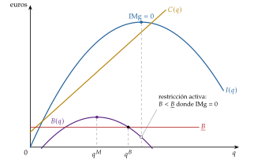
Fuente: elaboración propia a partir de Baumol (1959).
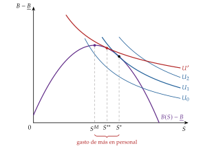
Fuente: elaboración propia a partir de Williamson (1964).
iii) Implicaciones
La empresa de Baumol produce más, cobra menos y gasta más en publicidad que el maximizador del beneficio. Y hace una predicción contrastable: si sube un coste fijo (o un impuesto de suma fija), el maximizador del beneficio no cambia su producción, pero la empresa de Baumol, con la restricción activa, la reduce para seguir cubriendo \(\underline{B}\).
La empresa de Williamson (1964) gasta de más en personal y en emolumentos: en las recesiones, cuando el beneficio se acerca al mínimo, los recortes de personal y de gastos discrecionales son mayores de lo que predice la maximización del beneficio.
Para acercar la decisión a la del accionista se puede ligar la retribución al beneficio o a la cotización (el directivo valora más el beneficio y sus curvas de indiferencia se hacen más planas en ese plano, lo que acerca la tangencia al máximo: en el gráfico 5, la curva \(U'\) y el punto \(S^{**}\)), exigir más transparencia y códigos éticos o comparar la gestión con la de empresas parecidas a través de los mercados financieros. La retribución con opciones sobre acciones tiene, a su vez, un riesgo: empujar a operaciones que suban la cotización a corto plazo aunque sean demasiado arriesgadas, por lo que suele diferirse en el tiempo para que el directivo se interese por la supervivencia de la empresa.
c) Valoración: de los objetivos a los incentivos
Las teorías gerenciales describen bien el conflicto, pero mantienen el supuesto neoclásico de información perfecta y simétrica, y con él no explican por qué los propietarios no lo resuelven. Si pudieran observar lo que hacen los directivos, les impondrían el objetivo del beneficio: el conflicto de objetivos solo aparta a la empresa del máximo beneficio si hay información asimétrica.
La bisagra es la ineficiencia X (Leibenstein, 1966): sin presión competitiva, las empresas producen por encima del coste mínimo, \(C^{\mathrm{obs}}(\vec{w},q)=(1+\chi)\,C(\vec{w},q)\), con \(\chi\geq 0\) y decreciente en la competencia [ver tema 3.A.12]; «el mejor de los beneficios del monopolio es una vida tranquila» (Hicks, 1935). Stigler (1976) replica que no es ineficiencia, sino minimización con otros costes: vigilar el esfuerzo solo compensa hasta que su coste marginal iguala su beneficio marginal. El debate desemboca en la teoría de la agencia y, después, en la de los contratos incompletos (II.3).
I.2.3. La teoría de la agencia
a) Idea
Hoy los problemas que crea la separación entre propiedad y dirección se analizan con la teoría de la agencia, que añade lo que faltaba: la información asimétrica. La relación de agencia une a un principal (los accionistas) que delega una tarea en un agente (el directivo) cuyas acciones no observa del todo [ver tema 3.A.13].
b) Modelo
i) Supuestos
Hay un problema de riesgo moral (acción oculta, después de firmar el contrato) si se dan 3 condiciones:
acción oculta: la acción del agente (su esfuerzo) no es observable ni verificable;
conflicto de intereses: el esfuerzo le cuesta al agente y beneficia al principal;
riesgo y aversión: el resultado depende también del azar, de modo que no revela la acción, y el agente es averso al riesgo.
La relación entre propietarios y directivos es de este tipo.7
ii) Desarrollo
El contrato óptimo resuelve un dilema: dar incentivos exige que el pago dependa del resultado, y eso carga riesgo sobre el agente, que pide una compensación; repartir bien el riesgo exige un pago fijo, que no da incentivos (Holmström, 1979). El principal elige el contrato que maximiza su beneficio esperado sujeto a la restricción de participación (PC), que el agente acepte el contrato, y a la restricción de compatibilidad de incentivos (IC), que al agente le convenga esforzarse. La diferencia con lo que costaría ese esfuerzo si fuera observable es el coste de agencia [ver tema 3.A.13].
Jensen y Meckling (1976) ven la empresa como un nexo de contratos y llaman costes de agencia a la suma de 3 partidas:
los costes de supervisión que soporta el principal (auditorías, consejos, presupuestos);
los costes de compromiso (bonding) que asume el agente para garantizar que no actuará contra el principal;
la pérdida residual: lo que se sigue perdiendo porque, pese a todo, las decisiones del agente no son las que tomaría el principal.
iii) Implicaciones
Los costes de agencia crecen con la separación entre propiedad y control y con el número de niveles de la jerarquía: son otro límite al tamaño de la empresa.
Unos incentivos insuficientes llevan al directivo a no tomar las decisiones que aumentarían el beneficio, pero unos incentivos desmedidos o mal diseñados lo empujan a asumir riesgos excesivos. Ejemplo: antes de la crisis de 2008, en muchas entidades de crédito españolas los directores de oficina se evaluaban por el volumen de crédito concedido, sin ponderar bien su riesgo. Los incentivos empujaban a prestar de más, también a clientes de dudosa solvencia, en contra del valor de la entidad a largo plazo.
c) Valoración: la disciplina del mercado
La teoría de la agencia, por ser estática, puede exagerar la discrecionalidad de los directivos. En un contexto dinámico, la competencia la limita:
la comparación con otras empresas o con otras divisiones de la misma, que filtra el azar común [ver tema 3.A.13];
el mercado de control empresarial: si la empresa vale menos de lo que podría, otro puede comprarla y sustituir a la dirección (Manne, 1965) [ver tema 3.B.4];
el mercado de directivos: la reputación disciplina a quien quiere hacer carrera (Fama, 1980; Holmström, 1999);
la competencia en el mercado del producto, que reduce el margen para la ineficiencia X.
Donde esa disciplina falta, los problemas de agencia son mayores:
en la empresa pública no hay mercado de control: el burócrata puede maximizar su presupuesto, con exceso de tamaño (Niskanen, 1971). Es uno de los fallos del sector público [ver tema 3.A.23] que, desde los años 80, se usaron para justificar las privatizaciones (someter las empresas a la disciplina del mercado) y las liberalizaciones (bajar las barreras para que la competencia potencial impida las conductas estratégicas); para ampliar, [ver tema 4.B.2] y [ver tema 4.B.15];
en la empresa privada, los escándalos financieros, como la quiebra de Enron en 2001 (Healy y Palepu, 2003), impulsaron el gobierno corporativo: en España, códigos de buen gobierno de asunción voluntaria con el principio de «cumplir o explicar», del Informe Olivencia (1998) al Código de buen gobierno de las sociedades cotizadas de la CNMV, de 2015 y revisado en 2020 (Comisión Especial para el estudio de un Código Ético de los Consejos de Administración de las Sociedades, 1998; Comisión Nacional del Mercado de Valores, 2020), y la reforma penal de la administración desleal (Jefatura del Estado, 2015) (anexo D).
Recapitulación del bloque I: la tecnología fija el tamaño eficiente de la planta, la escala mínima eficiente, y cuántas empresas caben en el mercado; los límites al tamaño de la empresa están dentro de ella: en la capacidad de dirección, en los objetivos de los directivos y en los incentivos con información asimétrica. Pero la tecnología no explica por qué esas economías se aprovechan dentro de una empresa y no con contratos entre empresas: es el puzle que abre la economía de los costes de transacción.
II. La economía de los costes de transacción
Es la «mención especial» del título y el núcleo de la exposición. En el cante: la pregunta de Coase, los costes de usar el mercado y la frontera de la empresa en el margen, con su gráfico y su función clave (2) (2′); Williamson: los 2 supuestos de comportamiento, los 3 atributos de las transacciones, la cuasirrenta y el hold-up con el caso Fisher Body en una frase, las 3 estructuras de gobierno con su gráfico y su función clave (3), que se queda en la pizarra, y los límites de la jerarquía (3′30″); Grossman, Hart y Moore: derechos residuales de control, infrainversión y por qué integrar también tiene costes (2′30″); los otros enfoques en una frase cada uno y las implicaciones de política económica (1′30″). Son de profundización la red de contratos de la nota, la condición de Riordan y Williamson, la condición de primer orden del modelo de contratos incompletos y su derivación (anexo B.3) y el debate sobre Fisher Body.
Una vez visto qué fija el tamaño eficiente y qué lo limita, pasamos a la mención especial del título, que levanta el segundo supuesto de la caja negra: ¿por qué hay empresa? Conclusión anticipada: la empresa existe porque usar el mercado cuesta; integra las transacciones en las que el riesgo de comportamiento oportunista es mayor, las que exigen activos específicos, y su frontera está donde el coste de organizar una transacción más dentro iguala el de hacerla en el mercado. Integrar también tiene costes, y por eso la empresa tiene límites.
II.1. El enfoque transaccional: los costes de transacción de Coase (1937)
«The main reason why it is profitable to establish a firm would seem to be that there is a cost of using the price mechanism.» Coase (1937, 390)
a) Idea
Hay 2 formas de coordinar la producción: el mercado, con precios, y la empresa, con autoridad: dentro de ella, un trabajador no cambia de tarea porque cambie un precio relativo, sino porque se lo ordenan. Las empresas son «islas de poder consciente» en un océano de cooperación inconsciente, como decía Robertson, citado por Coase (1937).
La pregunta de Coase es la del enganche: si el mercado asigna bien los recursos, ¿por qué hay tanta actividad organizada por la autoridad? La producción podría organizarse con transacciones puntuales entre productores independientes, y la empresa no tendría por qué existir. Es el dilema de hacer o comprar (make or buy).
b) Modelo
i) Supuestos
Usar el mecanismo de precios tiene costes de transacción, que la teoría anterior, atenta solo a los costes de producción, había pasado por alto (Coase, 1937, 1991):
costes ex ante: descubrir cuáles son los precios relevantes y buscar proveedores fiables, y negociar y redactar un contrato para cada transacción;
costes ex post: vigilar el cumplimiento, coordinar los distintos procesos, adaptar el contrato a lo que no se previó y resolver los conflictos.
Son mayores cuanto más larga e incierta es la relación, porque el contrato no puede preverlo todo.8
Organizar dentro también cuesta: la dirección tiene rendimientos decrecientes (I.2.1), de modo que el coste de organizar una transacción más crece con el tamaño de la empresa.
ii) Desarrollo
Cada transacción se organiza donde resulta más barata. La empresa crece incorporando transacciones mientras organizar una más dentro cueste menos que hacerla en el mercado o en otra empresa; su frontera es una condición en el margen, no una comparación de totales (Coase, 1937). Si \(m\) es el número de transacciones que organiza la empresa, su tamaño, \(m^{*}\), cumple
\[\mathrm{CMg}^{\mathrm{org}}(m^{*})=\mathrm{CMg}^{\mathrm{tr}}(m^{*})\tag{2}\]
con \(\mathrm{CMg}^{\mathrm{org}}\) el coste marginal de organizar una transacción más dentro, creciente por los rendimientos decrecientes de la dirección, y \(\mathrm{CMg}^{\mathrm{tr}}\) el de hacerla en el mercado o en otra empresa (gráfico 6).
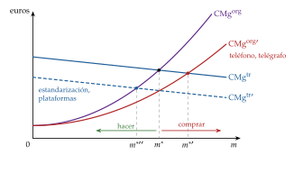
Fuente: elaboración propia a partir de Coase (1937).
iii) Implicaciones
La empresa será mayor cuanto menores sean sus costes de organizar y más despacio crezcan, y cuanto mayores sean los de usar el mercado. Una innovación que abarate la coordinación a distancia, como el teléfono y el telégrafo en tiempos de Coase, agranda las empresas (Coase, 1937); una que abarate las transacciones de mercado (la estandarización, las plataformas digitales) favorece la subcontratación.
El tamaño de la empresa y el alcance del mercado se determinan juntos, en el margen: es la misma lógica marginalista de la teoría neoclásica aplicada a la organización.
c) Extensiones
El mismo concepto le sirve a Coase (1960), 23 años después, para otra pregunta: sin costes de transacción, la negociación resuelve las externalidades sea quien sea el titular de los derechos; con ellos, importa a quién se asignan [ver tema 3.A.23]. Es la misma idea que decide quién debe ser dueño de los activos (II.3).
d) Valoración
Coase cambia la pregunta (por qué hay empresas y dónde termina cada una), pero deja sin decir qué hace que una transacción sea cara en el mercado y barata dentro. Durante casi 40 años su artículo fue mucho más citado que usado en el análisis aplicado, hasta que Williamson identificó esos factores.
II.2. Williamson: especificidad de los activos, oportunismo y estructuras de gobierno
a) Idea
b) Modelo
i) Supuestos de comportamiento
Racionalidad limitada (Simon, 1955): los agentes quieren ser racionales, pero solo lo consiguen en parte; no pueden prever ni escribir todas las contingencias, y por eso todos los contratos complejos son incompletos: muchas contingencias son imprevisibles y, aunque se pudieran prever, son tantas que no cabrían en un contrato.
Oportunismo: la búsqueda del propio interés con engaño: ocultar información, prometer lo que no se piensa cumplir, aprovechar los huecos del contrato.
Sin racionalidad limitada, bastaría un contrato completo; sin oportunismo, bastaría la palabra dada. Con los 2, el problema es proteger las transacciones de los comportamientos oportunistas ex post, y vigilarlos puede tener un coste prohibitivo.
ii) Desarrollo
Atributos de las transacciones: se distinguen por 3 atributos (Williamson, 1979):
la especificidad de los activos, \(a\), el más importante: un activo es específico si pierde buena parte de su valor fuera de la relación para la que se invirtió (está, por tanto, muy ligado a los costes hundidos). Puede ser específico por su localización (una central junto a una mina), físico (un molde para un solo cliente), humano (lo que se aprende trabajando con un socio), dedicado (capacidad ampliada para un cliente) o de marca;
la incertidumbre: cuantas más contingencias, más huecos tiene el contrato y más hay que adaptarlo;
la frecuencia: si la transacción se repite, compensa montar una estructura de gobierno especializada, cuyo coste fijo se reparte entre muchas transacciones. No es que la frecuencia encarezca la transacción: con activos específicos y transacciones frecuentes, compensa integrarlas.
Cuasirrenta y retención: la cuasirrenta de un activo específico es la diferencia entre su valor en la relación y su valor en el mejor uso alternativo (Klein, Crawford y Alchian, 1978). Una vez hecha la inversión, la otra parte puede amenazar con romper para renegociar el precio y apropiarse de la cuasirrenta: es el problema de la expropiación de la cuasirrenta (hold-up). El proveedor que ha invertido teme que el cliente no renueve o le imponga un reparto peor, y el cliente que depende de un proveedor especializado teme quedar como rehén. Lo que antes de invertir era un mercado con muchos oferentes se convierte después en un monopolio bilateral, con el precio indeterminado entre los 2 y decidido por la negociación [ver tema 3.A.17]: es la transformación fundamental de Williamson (1985). Anticipándolo, la parte que tendría que invertir invierte menos o pide salvaguardas, y se pierde eficiencia.10
Estructuras de gobierno. Williamson (1991) compara 3:
el mercado, que da incentivos fuertes y se adapta solo a los cambios de precios, pero protege mal las inversiones específicas;
la jerarquía (la empresa), que adapta por autoridad y protege la inversión, pero con incentivos débiles y costes burocráticos;
las formas híbridas (contratos a largo plazo, franquicias, joint ventures, alianzas), entre ambas.
Sus costes de gobierno dependen de la especificidad, con \[C_{\text{mercado}}(0)<C_{\text{híbrida}}(0)<C_{\text{jerarquía}}(0)\qquad\text{y}\qquad C_{\text{mercado}}'(a)>C_{\text{híbrida}}'(a)>C_{\text{jerarquía}}'(a)>0,\] y la estructura eficiente es la que minimiza el coste de gobierno:
\[C^{*}(a)=\min\big\{C_{\text{mercado}}(a),\;C_{\text{híbrida}}(a),\;C_{\text{jerarquía}}(a)\big\}\tag{3}\]
mercado si \(a<a_1\), forma híbrida si \(a_1<a<a_2\) y jerarquía si \(a>a_2\) (gráfico 7).
Producción y gobierno juntos: el mercado tiene además una ventaja en los costes de producción, porque un proveedor que vende a muchos clientes agrega demandas y aprovecha las economías de escala. Por eso la integración solo compensa con una especificidad mayor de la que justificarían los costes de gobierno solos: las empresas compran más de lo que haría pensar el hold-up (Riordan y Williamson, 1985) (anexo B.2).
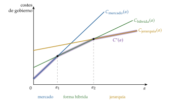
Fuente: elaboración propia a partir de Williamson (1991).
iii) Implicaciones
Las transacciones con activos poco específicos van al mercado, sea cual sea su frecuencia; con especificidad intermedia, a contratos a largo plazo y formas híbridas; con mucha especificidad, sobre todo si son frecuentes e inciertas, a la empresa (Williamson, 1979). Lo que caracteriza a la empresa es la jerarquía, una organización para ahorrar costes de transacción, y esos costes fijan su tamaño, su alcance y los de la industria.
La integración vertical deja de ser un indicio de monopolización: puede ser la forma más barata de proteger una inversión.
Y la jerarquía tiene sus límites: su coste de gobierno, \(C_{\text{jerarquía}}(a)\), es el más alto cuando la especificidad es baja. Una empresa grande podría, en principio, hacer lo mismo que varias pequeñas y algo más: mantener cada unidad como si fuera independiente e intervenir solo cuando así se gane; si pudiera, una sola empresa organizaría toda la economía. Williamson (1985, cap. 6) explica por qué no puede (la imposibilidad de la intervención selectiva):
al integrar, el antiguo propietario pasa a ser empleado y pierde el derecho al beneficio residual: sus incentivos se debilitan (incentivos de baja potencia);
la dirección no puede comprometerse a intervenir solo cuando conviene, y los precios internos se pueden manipular;
crecen los costes burocráticos: reglas, controles y actividades de influencia de quienes buscan que las decisiones les favorezcan.
El caso Fisher Body–General Motors. En 1919, General Motors compró el 60 % de Fisher Body, su proveedor de carrocerías, y firmó con ella un contrato de suministro en exclusiva por 10 años, a coste más un margen. Cuando la demanda de carrocerías cerradas de acero se disparó, según Klein, Crawford y Alchian (1978) Fisher Body se aprovechó del contrato: precios altos por el margen sobre el coste y negativa a instalar sus plantas junto a las de General Motors. En 1926, General Motors compró el 40 % restante: la integración vertical habría resuelto el hold-up. Es el ejemplo de los manuales, y también un caso discutido: con documentos de la época, Coase (2000) y Casadesus-Masanell y Spulber (2000) sostienen que no hubo expropiación, y Freeland (2000) atribuye la compra al deseo de retener a los hermanos Fisher en la dirección; Klein (2000) mantiene su interpretación.
c) Evidencia empírica
En la industria del automóvil, los componentes que exigen más conocimiento específico de ingeniería se fabrican más a menudo dentro (Monteverde y Teece, 1982); en el carbón, los contratos entre centrales y minas son más largos cuanto más específica es la relación, y más aún en las centrales a pie de mina (Joskow, 1987). En conjunto, los estudios apoyan las predicciones de la teoría (Lafontaine y Slade, 2007).
d) Valoración
Explica fenómenos que la tecnología no explica: las fusiones y adquisiciones verticales, las alianzas estratégicas y las joint ventures en los casos intermedios, las franquicias y la externalización de actividades poco específicas aunque sean frecuentes (limpieza, contabilidad); sirve también para elegir la estructura organizativa interna más eficaz.
Pero sus conceptos son difíciles de medir, compara estructuras de forma casi verbal y no dice por qué integrar resuelve el oportunismo: si el proveedor pasa a ser una división, ¿por qué deja de comportarse de forma oportunista? Es la pregunta de la teoría de los derechos de propiedad.
II.3. El enfoque de los derechos de propiedad: contratos incompletos (Grossman, Hart y Moore)
Lecturas: el Nobel de Hart y Holmström en Nada es Gratis (https://nadaesgratis.
a) Idea
Grossman y Hart (1986) y Hart y Moore (1990) responden a la pregunta que deja Williamson: ¿qué cambia al integrar? Cambia quién es el dueño de los activos. Una empresa es un conjunto de activos físicos de propiedad común: si 2 activos tienen el mismo dueño, forman una empresa integrada; si tienen dueños distintos, son 2 empresas que se relacionan en el mercado.
Como en la economía de los costes de transacción, la empresa existe porque los contratos son incompletos; lo nuevo es que la propiedad es una fuente de poder precisamente por eso: decide quién manda en lo que el contrato no prevé.
b) Modelo
i) Supuestos
Los contratos son incompletos no solo por la racionalidad limitada, sino porque muchas variables, aunque las partes las vean, no son verificables por un juez.
Hay 2 tipos de derechos sobre un activo: los derechos específicos, los que el contrato detalla y se pueden ceder (qué se entrega, a qué precio), y los derechos residuales de control, el derecho a decidir sobre el uso del activo en todo lo que el contrato, la ley o la costumbre no prevén (Hart, 1995). La propiedad es la titularidad de los derechos residuales. Recaen sobre activos físicos, no sobre las personas: el trabajo no se puede poseer.
2 partes, un comprador y un vendedor. Antes de comerciar, el comprador hace una inversión específica \(e\), con coste \(e\), que no se puede contratar. Si comercian, generan un valor \(y(e)\), con \(y'>0\) e \(y''<0\); si no, el comprador obtiene su opción exterior \(y_0(e)\), con \(0\leq y_0'(e)<y'(e)\) (la inversión vale menos fuera de la relación: es específica), y el vendedor obtiene 0. Después de invertir, negocian y se reparten a partes iguales la ganancia de comerciar: la solución de negociación de Nash simétrica, con poder de negociación \(\gamma=\tfrac12\) (Nash, 1950) [ver tema 3.A.14].
ii) Desarrollo
El comprador anticipa que recibirá su opción exterior más la mitad de la ganancia, \(y_0(e)+\tfrac12\,[y(e)-y_0(e)]-e\), e invierte hasta \[\tfrac12\,y'(e^{*})+\tfrac12\,y_0'(e^{*})=1,\] mientras que la inversión eficiente cumple \(y'(e^{o})=1\). Como \(y_0'<y'\), en \(e^{*}\) el valor marginal de la inversión supera su coste: \(e^{*}<e^{o}\), hay infrainversión. Es el hold-up formalizado: el comprador paga todo el coste y se queda solo con una parte del rendimiento (anexo B.3).
La propiedad mueve la opción exterior. Si el comprador es dueño también del activo del vendedor (integración), su opción exterior es mayor y más sensible a su inversión, \(y_0'\) sube y \(e^{*}\) se acerca a \(e^{o}\). Pero si el vendedor también tuviera que invertir, perdería incentivos: integrar da incentivos al que compra y los quita al que es comprado.
iii) Implicaciones
La integración tiene costes además de beneficios: la propiedad de los activos debe ir a la parte cuya inversión específica es más importante para el valor de la relación (Grossman y Hart, 1986); los activos muy complementarios deben tener el mismo dueño, y los independientes, dueños distintos; la parte imprescindible debe ser propietaria (Hart y Moore, 1990).
La frontera de la empresa: es el conjunto de activos bajo propiedad común que da los mejores incentivos de inversión. La empresa no crece hasta hacerse con todos los derechos residuales: la integración hacia atrás (el comprador adquiere al vendedor), hacia delante (el vendedor adquiere al comprador) o la no integración pueden ser cada una la mejor, según quién invierte. Ese coste de integrar es un límite al tamaño de la empresa que el enfoque tecnológico no ve.
c) Extensiones
Propiedad pública o privada: un gestor privado de prisiones tiene incentivos a reducir costes que también reducen la calidad no contratable (la formación de los vigilantes), y el Estado debería mantener la propiedad cuando ese deterioro es grave (Hart, Shleifer y Vishny, 1997); para ampliar, [ver tema 4.B.15].
Finanzas: la deuda y las acciones se pueden ver como un reparto de los derechos de control entre acreedores y accionistas [ver tema 3.B.3].
d) Evidencia empírica
En el transporte por carretera de Estados Unidos, la llegada de ordenadores a bordo, que hacen verificables más acciones del conductor, cambió quién era dueño de los camiones, como predice la teoría (Baker y Hubbard, 2003).
e) Valoración
Explica por qué la propiedad importa y por qué integrar no es gratis, y valió a Hart el Nobel de 2016, compartido con Holmström por la teoría de los contratos. Sus críticas: supone que la negociación ex post es eficiente, aunque no se pueda contratar ex ante (Hart, 2017), y se centra en la inversión en activos físicos, cuando en muchas empresas el activo clave es el capital humano, que no se puede poseer.
II.4. Otras teorías de la empresa e implicaciones de política económica
Una vez vistos los 3 enfoques centrales, otras teorías ponen el acento en otros rasgos de la empresa; todas son complementarias de las anteriores:
La producción en equipo (Alchian y Demsetz, 1972): cuando varios trabajan juntos, el resultado conjunto es mayor que la suma de las partes, pero solo se observa ese resultado y cada uno tiene incentivos a escaquearse. La solución es un supervisor que mida la productividad, vigile y sancione (despida, resuelva contratos), y para que tenga incentivos a vigilar se le da el derecho al beneficio residual: el empresario es el perceptor del residuo. Para Alchian y Demsetz, la empresa no tiene un poder de mando distinto del de cualquier contrato: es un contratista central.
La empresa como nexo de contratos (Jensen y Meckling, 1976): es la red de contratos entre propietarios, directivos, trabajadores, acreedores y proveedores, y su forma minimiza los costes de agencia (I.2.3).
La empresa como sistema de incentivos (Holmström y Milgrom, 1994): la propiedad de los activos, la retribución y el diseño de los puestos se eligen juntos porque son complementarios; un empleado con incentivos débiles y sin activos propios es coherente, y un contratista con incentivos fuertes y sus propias herramientas, también.
Autoridad formal y real (Aghion y Tirole, 1997): la autoridad formal es el derecho a decidir; la real, el control efectivo de las decisiones, que tiene quien está mejor informado. Delegar estimula la iniciativa del subordinado, que se informa porque sabe que decidirá él, a costa de perder control: la empresa elige cuánto centralizar o delegar según ese dilema.
Recursos y capacidades (Penrose, 1959; Wernerfelt, 1984): la empresa es un conjunto de recursos, materiales e inmateriales, y de capacidades organizativas para combinarlos. Sus recursos difíciles de imitar explican su ventaja competitiva, y los recursos ociosos, hacia qué productos y mercados nuevos crece.
Implicaciones de política económica, comunes a todos los enfoques: las autoridades de competencia no deben condenar de antemano la integración vertical u horizontal, las franquicias, los contratos de exclusiva ni las concentraciones. Lo que parece una restricción de la competencia puede ser la forma más barata de aprovechar economías de escala y de alcance (I.1) o de reducir los costes de unos contratos incompletos (II.2, II.3). La valoración tiene que ser caso a caso, comparando las ganancias de eficiencia con el riesgo de cerrar el mercado a los competidores (III.4) [ver tema 3.B.39] [ver tema 4.A.15].
Recapitulación del bloque II: la empresa existe porque usar el mercado cuesta, y su frontera está en el margen en que organizar una transacción más dentro cuesta lo mismo que comprarla (Coase, 1937); integra las transacciones con activos específicos, en las que el oportunismo es más peligroso (Williamson, 1985), y la propiedad de los activos, que da mejores incentivos a unos a costa de otros, le pone límites (Grossman y Hart, 1986). Hasta aquí, la empresa por dentro. Pero las fronteras de la empresa también deciden cuántas empresas hay y cómo compiten: pasamos a la Teoría de la Organización Industrial.
III. La Teoría de la Organización Industrial: barreras a la entrada y mercados impugnables
En el cante: Chamberlin y el nacimiento de la TOI en una frase; el paradigma ECR con su esquema, el IHH y sus críticas, y la respuesta de Chicago (2′30″); las definiciones de barrera de Bain y Stigler, los tipos, el precio límite con su gráfico y su función clave (4), su crítica de credibilidad y el árbol de disuasión en 3 etapas, con la señal, la depredación y la proliferación de marcas en una frase cada una (3′30″); los mercados impugnables: los 3 supuestos, la configuración sostenible con su función clave (5), las implicaciones y la fragilidad ante los costes hundidos (2′30″); la Nueva TOI, la NOIE y las aportaciones de Tirole (1′30″). Son de profundización la relación de Cowling y Waterson, los umbrales de las directrices de concentraciones, el caso lineal del precio límite, el modelo de Dixit, la tabla de supuestos, la NOIE en detalle y los anexos.
Abiertas la empresa y sus fronteras, salimos al mercado y levantamos el tercer supuesto de la caja negra: que la estructura del mercado es un dato. Conclusión anticipada: el poder de mercado no depende tanto del número de empresas como de lo fácil que sea entrar; las instaladas pueden levantar barreras solo si sus amenazas son creíbles, y sin costes hundidos basta la amenaza de entrada para disciplinar incluso a un monopolio.
III.1. Del enfoque neoclásico a Harvard y Chicago
El enfoque neoclásico: hasta los años 30, la empresa es una caja negra precio-aceptante en un mercado de competencia perfecta [ver tema 3.A.16], y la teoría presta poca atención a su conducta y a cómo se forma la estructura del mercado: ofrece una teoría de la producción y de los costes, pero no una teoría de la empresa ni de la industria.
La crítica de Chamberlin: Chamberlin (1933) y J. Robinson (1933) estudian los mercados entre la competencia perfecta y el monopolio [ver tema 3.A.18]. Hay consenso en ver ahí el punto en que la TOI se separa de la teoría de los precios: a partir de entonces se estudian las industrias una a una, con datos.
III.1.1. El paradigma estructura-conducta-resultado: la escuela de Harvard
Idea: Mason (1939) y su discípulo Bain (1951, 1956, 1959) proponen el paradigma estructura-conducta-resultado (ECR): una causalidad que va de las condiciones básicas de oferta y demanda a la estructura del mercado, de esta a la conducta de las empresas y de esta al resultado (gráfico 8):
estructura: número y tamaño de vendedores y compradores (la concentración), condiciones de entrada, diferenciación del producto, integración vertical;
conducta: fijación de precios, colusión, publicidad, investigación, creación de barreras;
resultado: margen sobre el coste, beneficios, eficiencia asignativa y productiva, progreso técnico.
Medida: la concentración se mide con la ratio de concentración de las \(m\) mayores empresas y el índice de Herfindahl-Hirschman, \[\mathrm{CR}_m=\sum_{i=1}^{m}s_i,\qquad \mathrm{IHH}=\sum_{i=1}^{n}(100\,s_i)^{2}\in(0;\,10.000],\] con \(s_i\in[0,1]\) la cuota de mercado de la empresa \(i\), ordenadas de mayor a menor; el IHH vale 10.000 en el monopolio.11 En el oligopolio de Cournot, el índice de Lerner medio ponderado por las cuotas es proporcional al IHH, \(\sum_i s_i\,\mathcal{L}_i=\mathrm{IHH}/(10.000\,|\varepsilon_{Q,p}|)\) (Cowling y Waterson, 1976) [ver tema 3.A.19] (anexo B.4): es la base teórica del paradigma.
Contexto histórico: nace en Estados Unidos, donde la política antimonopolio venía de la Sherman Act de 1890 y de la Clayton Act de 1914 (Federal Trade Commission, 2026), y le da un fundamento empírico: Bain (1951) encuentra beneficios mayores en las industrias más concentradas.
Implicaciones de política económica: sospechar de las estructuras concentradas, porque llevarán a conductas anticompetitivas, con precios por encima del coste marginal y beneficios extraordinarios: una pérdida de eficiencia asignativa (el triángulo de Harberger, [ver tema 3.A.17]) a la que puede sumarse la ineficiencia X [ver tema 3.A.12]. La política actúa sobre la estructura: control de concentraciones y, en el extremo, división de empresas (Standard Oil en 1911, AT&T en 1984).
Valoración: la causalidad no es unidireccional (la conducta cambia la estructura con fusiones, barreras o innovación, y los resultados cambian la conducta); el enfoque es estático; su evidencia es una correlación entre industrias, sin una teoría de la conducta, y la concentración puede ser fruto de la eficiencia.
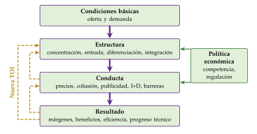
Fuente: elaboración propia a partir de Lipczynski, Wilson y Goddard (2017, cap. 1).
III.1.2. La escuela de Chicago
Idea: desde los años 50 y 60, Stigler (1964, 1968), McGee (1958) y Demsetz (1968, 1973) vuelven al modelo competitivo como guía:
la concentración puede ser fruto de la eficiencia: si las empresas grandes ganan más porque son más eficientes, la correlación de Bain no prueba colusión; en las industrias concentradas, las empresas pequeñas no ganan más que en las demás (Demsetz, 1973);
los cárteles son inestables, porque cada miembro gana rompiéndolos y es caro vigilarlos (Stigler, 1964) [ver tema 3.A.19];
la depredación es irracional: comprar al rival es más barato que arruinarse para echarlo (McGee, 1958);
el poder de mercado es temporal: los beneficios atraen la entrada, y las barreras duraderas son casi siempre legales;12
el monopolio natural se puede disciplinar subastando el derecho a servir el mercado: competencia por el mercado (Demsetz, 1968) [ver tema 3.A.17] [ver tema 3.A.20].
Implicaciones de política económica: el criterio es el bienestar del consumidor; tolerancia con las concentraciones y las restricciones verticales, y desregulación. Su influencia en la política de competencia de Estados Unidos desde los años 70 fue grande.
Valoración: confía en que la entrada sea rápida y barata y descarta las conductas estratégicas por irracionales; la teoría de juegos mostrará que pueden ser racionales si hay compromisos creíbles o información asimétrica. El debate se resuelve en las barreras a la entrada: si existen, Harvard puede tener razón; si no, la amenaza de entrada basta.13
III.2. Las barreras a la entrada
Una vez visto que el debate entre Harvard y Chicago se resuelve en las condiciones de entrada, pasamos a ellas. Las barreras a la entrada son el supuesto 5 de la lista común de las estructuras de mercado, la libre entrada y salida a largo plazo, que el monopolio levanta [ver tema 3.A.17] (tabla 1).
III.2.1. Definición y tipos
Definición: hay 2 clásicas, y la diferencia importa para la política:
Bain (1956): todo lo que permite a las empresas instaladas fijar a largo plazo precios por encima del coste medio mínimo sin atraer la entrada. Señala 3 fuentes: las economías de escala, las ventajas absolutas en costes (mejor tecnología, factores escasos, patentes, necesidades de capital) y la diferenciación del producto (fidelidad a las marcas);
Stigler (1968): un coste que tiene que soportar quien entra y no soportaron las instaladas. Con esta definición, las economías de escala no son una barrera si el entrante accede a la misma tecnología.
Weizsäcker (1980) añade el criterio de bienestar: solo es barrera la que reduce el bienestar; impedir la entrada puede ser eficiente si, con economías de escala, cada entrante duplica costes fijos.14
Tipos:
barreras estructurales, que vienen de la tecnología, la demanda o las instituciones: economías de escala grandes frente a la demanda; costes hundidos, los que no se recuperan al salir (inversión en activos específicos, publicidad, investigación); ventajas absolutas en costes; fidelidad a la marca y costes de cambio; efectos de red, y barreras legales (licencias, concesiones, patentes);
barreras estratégicas, las que crean las propias instaladas con su conducta: el precio límite, la capacidad, la proliferación de marcas, la depredación o el aumento de los costes de los rivales. Para que disuadan, tienen que ser creíbles, y eso es lo que la teoría de juegos permite juzgar [ver tema 3.A.14].
Condiciones de entrada: Bain (1956) distingue 3 situaciones (Tirole, 1988, cap. 8): entrada bloqueada (la instalada fija el precio de monopolio y aun así nadie entra), disuadida (la instalada tiene que cambiar su conducta para evitarla) y acomodada (le sale más a cuenta dejar entrar).
III.2.2. El precio límite
a) Idea
b) Modelo
i) Supuestos
Una empresa instalada y un entrante potencial con la misma tecnología: coste medio a largo plazo en forma de L, con escala mínima eficiente \(\overline{q}\) y coste medio mínimo \(\overline{c}\) (gráfico 1); demanda de mercado \(x(p)\), con inversa \(p(Q)\).
Postulado de Sylos-Labini: el entrante cree que, si entra, la instalada mantendrá su producción \(q_{\mathrm I}\); y, para no tener una desventaja de costes, tiene que entrar al menos con \(\overline{q}\).
ii) Desarrollo
Si entra, la producción total pasa a ser \(q_{\mathrm I}+\overline{q}\) y el precio, \(p(q_{\mathrm I}+\overline{q})\). La entrada no compensa si ese precio no cubre \(\overline{c}\), es decir, si \(q_{\mathrm I}+\overline{q}\geq x(\overline{c})\): la demanda residual del entrante queda por debajo de su coste medio. El precio límite es el más alto que impide la entrada (gráfico 9):15
\[q^{L}=x(\overline{c})-\overline{q},\qquad p^{L}=p(q^{L})>\overline{c}\tag{4}\]
Si el precio de monopolio ya cumple \(p^{M}\leq p^{L}\), la entrada está bloqueada; si no, la instalada compara el beneficio de fijar \(p^{L}\) (entrada disuadida) con el de dejar entrar (entrada acomodada).
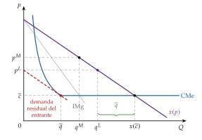
Fuente: elaboración propia a partir de Modigliani (1958).
iii) Implicaciones
El margen \(p^{L}-\overline{c}\) es mayor cuanto mayor es la escala mínima eficiente frente al mercado (\(\overline{q}/x(\overline{c})\)) y cuanto menos elástica es la demanda: las economías de escala son la barrera.
La amenaza de entrada limita el precio aunque nadie entre: el precio observado queda entre el competitivo y el de monopolio, y el coste de la barrera para la instalada es el beneficio al que renuncia por no fijar \(p^{M}\).
c) Valoración
La amenaza no es creíble. Una vez que el entrante ha entrado, a la instalada no le conviene mantener su producción, sino reducirla y repartirse el mercado: el postulado de Sylos-Labini no forma parte de un equilibrio de Nash perfecto en subjuegos (ENPS), igual que la amenaza de luchar en el juego de entrada [ver tema 3.A.14], y el entrante racional no se lo cree. Para que la disuasión funcione hace falta un compromiso que cambie lo que a la instalada le conviene hacer tras la entrada (III.2.3) o información asimétrica (III.2.4).
III.2.3. El compromiso de capacidad
a) Idea
La instalada puede hacer creíble la lucha comprometiéndose antes de la entrada con una inversión irreversible que cambie sus incentivos después: es la lógica de «quemar las naves» (Schelling, 1960) [ver tema 3.A.14], aplicada por A. M. Spence (1977) y Dixit (1980).
b) Modelo
i) Supuestos
El juego de entrada con información completa, con los pagos (entrante, instalada) de siempre: si el entrante no entra, (0, \(B^{M}\)); si entra y la instalada acomoda, (1, \(B^{D}\)); si entra y la instalada lucha con una guerra de precios, (\(-1\), \(B^{G}\)), con \(B^{G}<B^{D}<B^{M}\) (en el ejemplo, \(B^{M}=4\), \(B^{D}=1\) y \(B^{G}=-1\)).
Luchar exige una capacidad grande. La instalada puede comprarla antes, con un coste hundido \(\mathrm{CH}\), o, si no lo hace, comprarla cuando luche; \(B^{G}\) ya descuenta ese coste. Si no hay entrada o si acomoda, la capacidad comprada antes queda ociosa y su coste es una pérdida.
3 etapas: (1) la instalada decide si invierte; (2) el entrante, que lo observa, decide si entra; (3) si ha entrado, la instalada decide si lucha o acomoda.
ii) Desarrollo
Por inducción hacia atrás (gráfico 10):
sin invertir, el juego es el de entrada de siempre: luchar es una amenaza no creíble (\(B^{G}<B^{D}\)), el entrante entra y la instalada acomoda;
tras invertir, la instalada lucha si \(B^{G}>B^{D}-\mathrm{CH}\), es decir, si \(\mathrm{CH}>B^{D}-B^{G}\): luchar le cuesta menos que dejar la capacidad ociosa;
el entrante, que lo anticipa, no entra, y la instalada gana \(B^{M}-\mathrm{CH}\), más que acomodando sin invertir si \(\mathrm{CH}<B^{M}-B^{D}\).
La disuasión es un ENPS si \[B^{D}-B^{G}<\mathrm{CH}<B^{M}-B^{D},\] lo que exige \(2B^{D}<B^{M}+B^{G}\). En el ejemplo, \(2<\mathrm{CH}<3\); con \(\mathrm{CH}=2{,}5\), la instalada invierte (gana \(1{,}5>1\)), lucharía si hubiera entrada (\(-1>-1{,}5\)) y el entrante no entra.
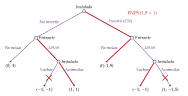
Fuente: elaboración propia a partir de Dixit (1980) y Tirole (1988, cap. 8). Pagos: (entrante, instalada), con \(\mathrm{CH}=2{,}5\); en rojo, el ENPS.
iii) Implicaciones
Es el carácter hundido de la inversión lo que da credibilidad: si la capacidad pudiera revenderse sin pérdida, no comprometería a nada. La instalada sacrifica beneficio (\(\mathrm{CH}\)) para conservar el monopolio.
Si \(\mathrm{CH}>B^{M}-B^{D}\), disuadir no compensa y la entrada es acomodada; si el entrante no entraría ni sin inversión, la entrada está bloqueada (Bain, 1956).
c) Extensiones
En A. M. Spence (1977), la instalada mantiene capacidad ociosa como amenaza. Dixit (1980), con competencia en cantidades tras la entrada, muestra que la capacidad instalada abarata la producción de la instalada hasta ese nivel y desplaza su función de reacción: en equilibrio no mantiene capacidad ociosa, sino que produce más que un monopolista, y la disuasión solo compensa si el coste fijo del entrante es grande. La taxonomía de Fudenberg y Tirole (1984) generaliza cuándo conviene invertir de más o de menos (anexo C).
d) Valoración
Da a la intuición de Bain un fundamento creíble, pero exige que la inversión sea hundida y observable, y que preceda a la entrada. Cuando la instalada no puede comprometerse así, le quedan otras conductas.
III.2.4. Otras conductas para disuadir la entrada
El precio límite como señal (Milgrom y Roberts, 1982a): si el entrante no conoce los costes de la instalada, un precio bajo puede señalizar que son bajos y que la competencia tras la entrada sería dura [ver tema 3.A.13]. En el equilibrio separador, la instalada de costes bajos fija un precio más bajo que el de monopolio para distinguirse, pero entra el mismo entrante que entraría con información completa: el precio límite existe, aunque no disuada más; solo en un equilibrio agrupador se disuade a entrantes que habrían entrado. El precio límite reaparece así como señal, resuelta como equilibrio bayesiano perfecto (EBP), y no como amenaza [ver tema 3.A.14].
La depredación: fijar precios por debajo del coste para expulsar a un rival y recuperar después las pérdidas. Chicago la juzgaba irracional (McGee, 1958), y con información completa y horizonte finito lo es (paradoja de la cadena de tiendas de Selten (1978)); con algo de incertidumbre sobre el tipo de la instalada, luchar al principio crea reputación de agresiva y puede ser racional (Kreps y Wilson, 1982; Milgrom y Roberts, 1982b) [ver tema 3.A.14]. En la práctica se juzga con pruebas de costes: un precio por debajo del coste variable medio se presume depredador (Areeda y Turner, 1975).
La proliferación de marcas: una empresa instalada puede lanzar muchas variedades para ocupar todos los nichos rentables, de modo que a un entrante no le queda hueco en el que cubrir su coste fijo (Schmalensee, 1978); solo disuade si retirar una variedad tras la entrada es caro (Judd, 1985) [ver tema 3.A.18].
Elevar los costes de los rivales: contratos de exclusiva con distribuidores o con los proveedores de un factor escaso, que encarecen la entrada más de lo que cuestan a la instalada (Salop y Scheffman, 1983).
Efectos de red y costes de cambio: si el valor de un producto crece con el número de usuarios, el que ya tiene la base de clientes parte con ventaja; es la barrera típica de las plataformas digitales (anexo E).
En manos de una empresa dominante, estas conductas pueden ser un abuso de posición dominante (artículo 102 del TFUE) [ver tema 3.B.39]. En suma, las barreras estratégicas existen, pero tienen que ser creíbles, y la credibilidad casi siempre exige costes hundidos o información asimétrica. ¿Qué pasa, entonces, si no hay costes hundidos?
III.3. Los mercados impugnables
a) Idea
Baumol (1982), en un artículo cuyo título la presenta como «un levantamiento en la teoría de la estructura de la industria», y Baumol, Panzar y Willig (1982) dan la vuelta al debate entre Harvard y Chicago: lo que disciplina a las empresas no es su número, sino la amenaza de entrada. Si entrar y salir no cuesta nada, cualquier beneficio extraordinario atrae a entrantes que entran y salen (hit and run): venden algo más barato mientras la instalada no reacciona y se van sin pérdidas cuando lo hace. Es la versión más extrema del argumento de la entrada.
b) Modelo
i) Supuestos
Un mercado es perfectamente impugnable (contestable) si:
los entrantes potenciales tienen acceso a la misma tecnología y a la misma demanda que las empresas instaladas (no hay ventajas absolutas en costes ni clientela cautiva);
la entrada y la salida son libres y sin costes hundidos: puede haber costes fijos, pero lo invertido se recupera al salir;
las instaladas tardan en reaccionar más que los consumidores: si un entrante cobra algo menos, le compran a él antes de que la instalada cambie su precio (los entrantes toman los precios de las instaladas como dados).
No hace falta que haya muchas empresas, ni rendimientos constantes, ni producto único: la teoría admite economías de escala y de alcance, y su caso estrella es el monopolio natural (tabla 1).
| N.º | Supuesto | Barreras a la entrada y mercado perfectamente impugnable |
|---|---|---|
| 1 | Agentes racionales | los consumidores maximizan su utilidad y las empresas, su beneficio Se mantiene |
| 2 | Información perfecta y simétrica | los consumidores conocen las características del producto y el precio, y las empresas, su tecnología y el precio; nadie sabe más que los demás Se mantiene (salvo en el precio límite como señal) |
| 3 | Producto homogéneo (sin sustitutivos cercanos) | los consumidores ven como sustitutivos perfectos las unidades de todas las empresas, de modo que solo les importa el precio Se mantiene (salvo en la proliferación de marcas) |
| 4 | Mercado atomizado: muchos compradores y vendedores (precio-aceptantes) | cada uno es pequeño respecto al mercado y sus decisiones individuales no mueven el precio Se levanta: pocas empresas, o una sola, que no son precio-aceptantes; se admiten economías de escala |
| 5 | Libre entrada y salida (a largo plazo) | a largo plazo, si hay beneficios extraordinarios, entran empresas hasta agotarlos, y si hay pérdidas, salen Se levanta con las barreras a la entrada (III.2) Se refuerza en los mercados impugnables: entrada y salida libres también a corto plazo, con la misma tecnología y sin costes hundidos |
| + | Supuesto propio de los impugnables | el entrante entra y sale antes de que las instaladas cambien sus precios: los toma como dados |
Fuente: elaboración propia a partir de Baumol, Panzar y Willig (1982) y de la lista común de supuestos [ver tema 3.A.16].
ii) Desarrollo
Una configuración de la industria (número de empresas, producciones y precio \(p\)) es factible si las producciones suman la demanda y ninguna empresa pierde dinero, y sostenible si, además, ningún entrante con la misma tecnología gana dinero vendiendo a un precio igual o menor una cantidad que el mercado le compre: \[p_{\mathrm E}\,q_{\mathrm E}-C(q_{\mathrm E})\leq 0\qquad\text{para todo } p_{\mathrm E}\leq p\ \text{y}\ q_{\mathrm E}\leq x(p_{\mathrm E}).\] En un mercado perfectamente impugnable, el equilibrio tiene que ser una configuración sostenible, y solo lo son las que cumplen
\[p=\mathrm{CMe}(q),\ \ q=x(p)\quad\text{(una empresa)};\qquad p=\mathrm{CMg}=\mathrm{CMe}\quad\text{(2 o más empresas)}\tag{5}\]
(Baumol, Panzar y Willig, 1982). Sus propiedades (anexo B.5):
beneficio nulo, \(p=\mathrm{CMe}\): si \(p>\mathrm{CMe}\), un entrante cobra algo menos, se lleva el mercado y sale antes de que la instalada reaccione;
eficiencia productiva: la industria produce al menor coste posible y no cabe la ineficiencia X;
ningún precio por debajo del coste marginal: si \(p<\mathrm{CMg}\), un entrante produciría algo menos y ganaría dinero;
con 2 o más empresas, \(p=\mathrm{CMg}\): si \(p>\mathrm{CMg}\), un entrante vendería un poco más a un precio un poco menor; con \(p=\mathrm{CMg}=\mathrm{CMe}\), cada empresa produce en su escala mínima eficiente, como en el largo plazo competitivo;
con una sola empresa (monopolio natural), el precio iguala el coste medio en el corte con la demanda, \(p=\mathrm{CMe}>\mathrm{CMg}\) (gráfico 11): es el segundo óptimo (second best) con presupuesto equilibrado, el mismo que impondría un regulador, sin regulación de precios [ver tema 3.A.17] [ver tema 3.A.22]; con varios productos, precios sin subvenciones cruzadas (Baumol, Bailey y Willig, 1977).
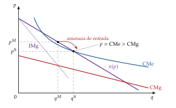
Fuente: elaboración propia a partir de Baumol, Panzar y Willig (1982).
iii) Implicaciones
El número de empresas no es un buen indicador del poder de mercado: hay que mirar las barreras a la entrada y a la salida, y sobre todo los costes hundidos. Es más fácil y más útil eliminarlas que multiplicar el número de competidores.
Es el enfoque de la competencia efectiva: la Ley 15/2007, de Defensa de la Competencia, pone como objetivo proteger «la competencia efectiva en los mercados» y valora las concentraciones según obstaculicen o no su mantenimiento (Jefatura del Estado, 2007): importa la conducta del mercado más que el número de empresas [ver tema 4.A.15].
En las industrias de red, el coste hundido está en la red (vías, cables, conducciones). Separar la red de los servicios y garantizar el acceso de terceros en condiciones no discriminatorias hace impugnables los segmentos que no son monopolio natural (los servicios ferroviarios, la comercialización de electricidad, la telefonía sobre la red de otro) [ver tema 3.A.20]; para ampliar, [ver tema 4.A.12].
c) Evidencia empírica
La aviación comercial era el candidato natural: los aviones son capital que puede cambiar de ruta, y la teoría se usó para defender la desregulación del transporte aéreo de Estados Unidos de 1978 (Bailey y Panzar, 1981; Bailey y Baumol, 1984). Los estudios posteriores encontraron que las tarifas de una ruta dependen del número de competidores que de verdad la sirven, no solo de los potenciales: el mercado es impugnable, pero de forma imperfecta, porque los aeropuertos, los derechos de aterrizaje y la reputación son costes hundidos (Morrison y Winston, 1987).
d) Valoración
El resultado es frágil. Si la instalada puede bajar el precio antes de que el entrante recupere un coste hundido, aunque sea pequeño, el entrante anticipa que perderá dinero y no entra, y la instalada puede fijar el precio de monopolio (Schwartz y Reynolds, 1983; Stiglitz, 1987): el paso de «sin costes hundidos» a «con algunos» no es continuo, como mostraba el compromiso de capacidad (III.2.3).
Weitzman (1983) añade que, sin costes hundidos, es difícil que haya economías de escala, lo que pone en duda el monopolio natural impugnable, y Shepherd (1984) critica que unos supuestos de entrada tan libres se usaran para justificar concentraciones; sus autores la defendieron como referencia normativa (Baumol, Panzar y Willig, 1983).
Su valor no está en describir mercados reales, pocos de los cuales son perfectamente impugnables (M. Spence, 1983), sino en servir de punto de referencia: dice qué hay que mirar (los costes hundidos y la velocidad de reacción de las instaladas) y qué política funciona (reducirlos). Para analizar lo que pasa cuando no se cumplen sus supuestos hacen falta la teoría de juegos y los datos: la Nueva TOI.
III.4. La Nueva Teoría de la Organización Industrial
La teoría de juegos: desde los años 70, la teoría de juegos da a la TOI una teoría de la conducta (Tirole, 1988) [ver tema 3.A.14]. La Nueva TOI conserva la pregunta de Harvard (la estructura y la conducta importan) y toma de Chicago el rigor teórico y la importancia de la entrada; la causalidad va en los 2 sentidos: la conducta (inversión, precios, publicidad) también cambia la estructura, como en el compromiso de capacidad (III.2.3). Los mercados impugnables (III.3) son la versión más extrema del argumento de la entrada.
La Nueva Organización Industrial Empírica (NOIE) estudia los mercados uno a uno y estima la conducta en lugar de suponerla, porque los costes marginales no se observan (Bresnahan, 1989), frente a los estudios entre industrias del ECR (Schmalensee, 1989):
con datos de precios y cantidades se estima un parámetro de conducta \(\theta\) en la condición de la industria \(p+\theta\,Q\,p'(Q)=\mathrm{CMg}\), equivalente a \(\mathcal{L}=\theta/|\varepsilon_{Q,p}|\): \(\theta=0\) es competencia (o Bertrand), \(\theta=1/J\) el oligopolio simétrico de Cournot y \(\theta=1\) el monopolio o el cártel; los giros de la demanda, y no solo sus desplazamientos, permiten identificarlo (Bresnahan, 1982);16
o se comparan modelos alternativos no anidados (Cournot, Bertrand, colusión) para ver cuál explica mejor los datos, como en el mercado de refrescos de cola (Gasmi, Laffont y Vuong, 1992).
La evidencia reciente apunta a márgenes crecientes: desde 2000 han subido de media un 8 % en las economías avanzadas (Fondo Monetario Internacional, 2019), y en Estados Unidos mucho más (De Loecker, Eeckhout y Unger, 2020), con un debate abierto entre la explicación tecnológica (empresas superestrella, como sostienen Autor et al. (2020)) y la de las barreras y la menor competencia (Philippon, 2019).
Jean Tirole (Nobel 2014) es la figura central de esta etapa. Su idea guía: no hay recetas universales; la intervención adecuada depende de los costes, de la información y del origen del poder de mercado de cada industria (Tirole, 2014). Entre las aportaciones que cita el Nobel (Economic Sciences Prize Committee of the Royal Swedish Academy of Sciences, 2014):
la inversión estratégica: cuándo conviene invertir de más o de menos (capacidad, publicidad, investigación) para disuadir o acomodar la entrada (Fudenberg y Tirole, 1984) (anexo C);
el cierre de mercados (foreclosure): el dueño de un cuello de botella integrado verticalmente puede negar el acceso o discriminar a los rivales para recuperar el poder de mercado que la competencia aguas abajo le quitaría (Hart y Tirole, 1990); es el contrapeso de la tolerancia con la integración vertical (II.4);
la regulación con información asimétrica: menús de contratos con los que el regulador hace que la empresa revele su eficiencia a cambio de una renta, y el efecto trinquete en la relación repetida (Laffont y Tirole, 1986, 1993), y el precio de acceso y de interconexión de las redes (Laffont, Rey y Tirole, 1998; Laffont y Tirole, 2000) [ver tema 3.A.17] [ver tema 3.A.20];
los mercados de 2 lados: plataformas que fijan precios a 2 grupos de usuarios que se necesitan, y para las que un precio muy bajo o nulo en un lado no es depredación (Rochet y Tirole, 2003).
Recapitulación del bloque III: el paradigma ECR veía el poder de mercado en la concentración; Chicago, en la regulación. Las barreras a la entrada resuelven el debate: el poder de mercado dura si entrar exige costes hundidos o si las instaladas pueden comprometerse de forma creíble; sin costes hundidos, la amenaza de entrada basta, aunque haya una sola empresa.
Conclusión
Recapitulación: en conclusión, la empresa deja de ser una caja negra:
la tecnología fija un tamaño eficiente mínimo; la dirección, los objetivos de los directivos y los problemas de agencia le ponen límites internos (I);
la empresa existe porque usar el mercado cuesta, y su frontera depende de la especificidad de los activos y de quién tiene los derechos residuales de control cuando el contrato calla (II);
en el mercado, el número de empresas importa menos que las condiciones de entrada: las barreras sostienen el poder de mercado si son creíbles, y sin costes hundidos basta la amenaza de entrada (III).
Relevancia: la defensa de la competencia mira la competencia efectiva y las barreras, no solo el número de empresas, y no condena de antemano integraciones, franquicias y exclusivas, que pueden ahorrar costes de transacción [ver tema 3.B.39] [ver tema 4.A.15]; la regulación de las industrias de red separa la red de los servicios para que estos sean impugnables [ver tema 3.A.20].
Extensiones y relación con otras partes del temario: la información asimétrica y la agencia [ver tema 3.A.13]; las herramientas de la teoría de juegos [ver tema 3.A.14]; las estructuras de mercado [ver tema 3.A.16] [ver tema 3.A.17] [ver tema 3.A.18] [ver tema 3.A.19]; el crecimiento de la empresa, las fusiones y las alianzas [ver tema 3.B.4]; las cadenas globales de valor como decisión de hacer o comprar entre países [ver tema 3.B.18], y las plataformas digitales, en las que los efectos de red y los datos son las nuevas barreras y que la Unión Europea regula desde 2022 con un reglamento «sobre mercados disputables y equitativos en el sector digital» (Parlamento Europeo y Consejo de la Unión Europea, 2022) (anexo E).
Opinión: la economía de los costes de transacción enseña humildad al regulador, porque muchas prácticas que parecen restrictivas son soluciones a problemas de contratación. Pero los márgenes crecientes recuerdan que la amenaza de entrada solo disciplina si entrar es posible: vigilar las barreras, sobre todo en los mercados digitales, es hoy la tarea central de la política de competencia.
Idea final: Lenin quería organizar la economía como una sola fábrica; los profesores de Coase, como un solo mercado. La respuesta de Coase es que los 2 cuestan: hay empresas porque los contratos no lo pueden prever todo, y no hay una sola porque la jerarquía también tiene costes. La economía real son islas de organización en un mar de mercado, y su tamaño lo fija el margen en que organizar y comprar cuestan lo mismo.
A. Anexo: la escuela austriaca y Schumpeter
Mercado y empresario (los neoaustriacos: Hayek y Kirzner, seguidores de Mises). La competencia es un proceso de descubrimiento: con incertidumbre y conocimiento disperso, los precios transmiten información, y el empresario es quien está alerta a las oportunidades de beneficio que otros no han visto (Kirzner, 1973). El mercado no está nunca en equilibrio, sino en un orden que tiende a él (Hayek, 1945).
Los beneficios extraordinarios no prueban un monopolio dañino, sino oportunidades por explotar; el poder de mercado duradero lo crea la regulación.
Implicaciones de política económica: libertad de entrada y reglas marco que no maten el incentivo a innovar. Controlar los precios o los beneficios de las industrias reguladas reduce el atractivo de entrar en ellas y, paradójicamente, protege a las instaladas; y las empresas que podrían innovar se desaniman si la regulación amenaza los beneficios de hacerlo. El price cap que propone Littlechild (1983) para la British Telecom privatizada responde a esa idea [ver tema 3.A.17].
La línea schumpeteriana (Schumpeter, 1942): lo relevante no es la competencia en precios, sino la que traen los productos y las técnicas nuevas, la destrucción creativa. El poder de mercado da los incentivos ex ante (la perspectiva de beneficios extraordinarios) y los recursos ex post (beneficios con los que financiar la innovación).
Implicaciones de política económica: fomento de la I+D y patentes, monopolios temporales que sacrifican eficiencia estática por innovación [ver tema 3.A.44].
Arrow (1962) sostiene lo contrario: el monopolista innova menos, porque al innovar se reemplaza a sí mismo y gana menos que un entrante que no tenía nada (efecto reemplazo).
B. Anexo: derivaciones
B.1. Maximización de las ventas con beneficio mínimo
Problema: maximizar \(I(q)\) sujeto a \(B(q)=I(q)-C(q)\geq\underline{B}\). Con el multiplicador \(\lambda\geq 0\), las condiciones de Kuhn-Tucker son \[\mathrm{IMg}(q)+\lambda\,\big[\mathrm{IMg}(q)-\mathrm{CMg}(q)\big]=0,\qquad \lambda\,\big[B(q)-\underline{B}\big]=0,\] y de la primera, \(\mathrm{IMg}=\frac{\lambda}{1+\lambda}\,\mathrm{CMg}\).
Si \(\lambda=0\) (restricción no activa), \(\mathrm{IMg}=0\): la empresa produce en el máximo del ingreso. Si \(\lambda>0\), \(0<\mathrm{IMg}<\mathrm{CMg}\): como el monopolista que maximiza el beneficio produce donde \(\mathrm{IMg}=\mathrm{CMg}\) y el ingreso marginal es decreciente, \(q^{B}>q^{M}\); \(q^{B}\) está en el tramo decreciente de \(B(q)\), con \(B(q^{B})=\underline{B}\).
Estática comparativa: si el coste fijo sube en \(\Delta\), la restricción activa pasa a ser \(B(q)-\Delta=\underline{B}\); como \(B\) es decreciente en \(q^{B}\), \(q^{B}\) baja. El maximizador del beneficio no cambia \(q^{M}\), porque el coste fijo no altera el coste marginal.∎
B.2. Producción y gobierno: Riordan y Williamson
Sea \(\Delta C(a)\) el sobrecoste de producción de hacer uno mismo frente a comprar: positivo, porque el proveedor agrega demandas y aprovecha economías de escala, y decreciente en \(a\), porque cuanto más específico es el bien, menos clientes comparten esa ventaja.
Sea \(\Delta G(a)=C_{\text{jerarquía}}(a)-C_{\text{mercado}}(a)\) la diferencia de costes de gobierno: positiva para \(a\) pequeña, por los costes burocráticos, y decreciente, porque la jerarquía protege mejor la inversión específica; se anula en \(\overline{a}\).
La empresa hace en lugar de comprar si \(\Delta C(a)+\Delta G(a)<0\), es decir, si \(a>\hat a\). Como \(\Delta C(\overline{a})>0\), en \(\overline{a}\) la suma aún es positiva, y \(\hat a>\overline{a}\): la ventaja de escala del mercado retrasa la integración (Riordan y Williamson, 1985; Williamson, 1985, cap. 4).∎
B.3. Infrainversión con contratos incompletos
Pago del comprador: \(y_0(e)+\tfrac12\,[y(e)-y_0(e)]-e=\tfrac12\,y(e)+\tfrac12\,y_0(e)-e\). Condición de primer orden: \(\tfrac12\,y'(e^{*})+\tfrac12\,y_0'(e^{*})=1\); de segundo orden, \(\tfrac12\,y''+\tfrac12\,y_0''<0\) si \(y\) e \(y_0\) son cóncavas.
Como \(y_0'(e^{*})<y'(e^{*})\), \(1=\tfrac12\,[y'(e^{*})+y_0'(e^{*})]<y'(e^{*})\); y como \(y'(e^{o})=1\) e \(y'\) es decreciente, \(e^{*}<e^{o}\).
Si la propiedad del activo del vendedor pasa al comprador, su opción exterior pasa a ser \(y_0^{\mathrm{I}}(e)\), con \(y_0^{\mathrm{I}\prime}(e)\geq y_0'(e)\) para todo \(e\): la condición de primer orden se cumple con un \(e^{*}\) mayor, más cerca de \(e^{o}\). Si el vendedor también invirtiera, su opción exterior sin el activo sería menor y menos sensible a su inversión, y su incentivo caería: de ahí los resultados sobre a quién dar la propiedad (Hart, 1995, cap. 2).∎
B.4. Cowling y Waterson: concentración y margen en Cournot
La condición de primer orden de la empresa \(i\) en el oligopolio de Cournot con costes distintos es \(p+q_i\,p'(Q)=\mathrm{CMg}_i\). Dividiendo por \(p\) y llamando \(s_i=q_i/Q\): \[\mathcal{L}_i=\frac{p-\mathrm{CMg}_i}{p}=-\frac{q_i\,p'(Q)}{p}=\frac{s_i}{|\varepsilon_{Q,p}|}.\]
Multiplicando por \(s_i\) y sumando: \(\sum_i s_i\,\mathcal{L}_i=\sum_i s_i^{2}/|\varepsilon_{Q,p}|=\mathrm{IHH}/(10.000\,|\varepsilon_{Q,p}|)\) (Cowling y Waterson, 1976). La concentración y el margen van juntos, pero porque las empresas más eficientes tienen más cuota, no necesariamente porque pacten: es la lectura de Demsetz (1973).∎
B.5. Propiedades del equilibrio impugnable
Beneficio nulo: si una empresa ganara \(pq-C(q)>0\), un entrante podría producir \(q\) a un precio algo menor que \(p\) y ganar dinero, lo que contradice la sostenibilidad.
\(p\geq\mathrm{CMg}\): si \(p<\mathrm{CMg}(q_j)\) en la producción \(q_j\) de una instalada, un entrante que produjera \(q_j-\delta\) al precio \(p\) ahorraría unos \(\mathrm{CMg}\cdot\delta>p\,\delta\) e ingresaría \(p\,(q_j-\delta)\): ganaría más que la instalada, que gana 0.
\(p\leq\mathrm{CMg}\) con 2 o más empresas: si \(p>\mathrm{CMg}(q_j)\), un entrante podría vender \(q_j+\delta\) a un precio un poco menor que \(p\), porque con otras empresas en el mercado hay demanda que quitarles, y ganaría unos \((p-\mathrm{CMg})\,\delta>0\) sobre el beneficio nulo de \(q_j\). Por tanto, \(p=\mathrm{CMg}\) y, con beneficio nulo, \(p=\mathrm{CMg}=\mathrm{CMe}\) (Baumol, Panzar y Willig, 1982, cap. 2).∎
C. Anexo: inversión estratégica, la taxonomía de Fudenberg y Tirole
Una inversión hecha antes de competir puede hacer a la empresa dura (más agresiva después: más capacidad, menor coste marginal) o blanda (menos agresiva: una base de clientes cautivos le hace preferir precios altos). Lo que conviene depende del objetivo (disuadir o acomodar) y de si las variables de la competencia son sustitutivos estratégicos (cantidades: funciones de reacción decrecientes) o complementos estratégicos (precios: funciones de reacción crecientes) (Fudenberg y Tirole, 1984). Para disuadir hay que ser duro; para acomodar con sustitutivos estratégicos también, porque el rival responde produciendo menos; con complementos estratégicos conviene ser blando, porque el rival responde subiendo su precio (tabla 2).
| La inversión hace dura a la empresa | La inversión hace blanda a la empresa | |
|---|---|---|
| Disuadir la entrada | invertir de más: perro grande (top dog) | invertir de menos: flaco y hambriento (lean and hungry) |
| Acomodar, sustitutivos estratégicos | invertir de más: perro grande | invertir de menos: flaco y hambriento |
| Acomodar, complementos estratégicos | invertir de menos: cachorro (puppy dog) | invertir de más: gato gordo (fat cat) |
Fuente: elaboración propia a partir de Fudenberg y Tirole (1984) y Tirole (1988, cap. 8).
D. Anexo: gobierno corporativo en España
El gobierno corporativo es el conjunto de reglas con las que los accionistas y otros interesados controlan a quienes dirigen la empresa: es la respuesta práctica al problema de agencia (I.2.3). Los poderes públicos no han podido resolver por ley (hard law) la desalineación de objetivos dentro de la empresa, y han recurrido a códigos de buenas prácticas (soft law).
En España, los códigos de buen gobierno son de asunción voluntaria, con el principio de cumplir o explicar: las sociedades cotizadas informan cada año de qué recomendaciones siguen y explican por qué no siguen las demás.
El Informe Olivencia (1998) y el Informe Aldama (2003) recomiendan reforzar el peso de los consejeros independientes, los que no forman parte del equipo directivo, y la información a los inversores (Comisión Especial para el estudio de un Código Ético de los Consejos de Administración de las Sociedades, 1998; Comisión Especial para el Fomento de la Transparencia y Seguridad en los Mercados y Sociedades Cotizadas, 2003).
El Código unificado de buen gobierno o Código Conthe (CNMV, 2006) los refunde (Comisión Nacional del Mercado de Valores, 2006).
El Código de buen gobierno de las sociedades cotizadas de la CNMV (2015, revisado en 2020) lo sustituye (Comisión Nacional del Mercado de Valores, 2015, 2020); la CNMV prepara una nueva revisión para 2027 (Comisión Nacional del Mercado de Valores, 2025).
La ley ha incorporado parte de esas recomendaciones: la Ley 31/2014 modificó la Ley de Sociedades de Capital para mejorar el gobierno corporativo (Jefatura del Estado, 2014), y la Ley Orgánica 1/2015 reformó el Código Penal para castigar en su artículo 252 la administración desleal de cualquier patrimonio ajeno (Jefatura del Estado, 2015).
E. Anexo: plataformas digitales y barreras a la entrada
Una plataforma de 2 lados pone en contacto a 2 grupos de usuarios que se benefician de que el otro sea grande (compradores y vendedores, usuarios y anunciantes): hay efectos de red cruzados (Rochet y Tirole, 2003). El precio óptimo de cada lado descuenta el valor que sus usuarios dan al otro: puede ser nulo o negativo en el lado que más atrae al otro, sin que sea depredación (Armstrong, 2006). Es la lógica de Coase llevada al mercado: la plataforma existe porque reduce los costes de transacción de encontrar contraparte.
Las plataformas reúnen casi todas las barreras de III.2: costes fijos altos y coste marginal casi nulo, efectos de red, costes de cambio y datos acumulados que mejoran el servicio. La competencia es por el mercado más que en el mercado, y el ganador se lleva la mayor parte: son lo contrario de un mercado impugnable.
Política: la defensa de la competencia ex post ha resultado lenta. El Tribunal de Justicia de la UE confirmó en 2024 la multa de 2.424 millones de euros a Google por favorecer su comparador de compras (Tribunal de Justicia de la Unión Europea, 2024) y en 2026 la de 4.125 millones por las condiciones impuestas a los fabricantes de móviles Android (Tribunal de Justicia de la Unión Europea, 2026). La Unión Europea ha añadido la regulación ex ante del Reglamento de Mercados Digitales, «sobre mercados disputables y equitativos en el sector digital» (la impugnabilidad como objetivo), que desde 2023 obliga a los guardianes de acceso designados, hoy 7 (Alphabet, Amazon, Apple, Booking, ByteDance, Meta y Microsoft), a abrir 23 servicios básicos de plataforma: interoperabilidad, portabilidad de los datos y prohibición de favorecer los servicios propios (Parlamento Europeo y Consejo de la Unión Europea, 2022; Comisión Europea, 2026a) [ver tema 3.B.39].
F. Anexo: para el test y el tribunal
Preguntas de otros exámenes:
¿Cuál es la diferencia entre la teoría de Coase y la de los derechos de propiedad? Coase explica por qué existe la empresa (los costes de usar el mercado); Grossman, Hart y Moore explican qué cambia al integrar: la propiedad de los activos y, con ella, los incentivos a invertir (II.3).
¿Por qué recibió Hart el Nobel? ¿Le suena el concepto de contratos incompletos? Por los contratos incompletos: los derechos residuales de control y la frontera de la empresa (II.3).
Defina riesgo moral y selección adversa: acción oculta después del contrato e información oculta antes del contrato [ver tema 3.A.13].
¿La saturación de un mercado implica siempre un aumento de la competencia? No: si entrar exige costes hundidos, la proliferación de marcas o de capacidad puede ser una barrera estratégica (III.2).
Trampas del test: los rendimientos constantes no son un supuesto de los mercados impugnables; en el monopolio impugnable, \(p=\mathrm{CMe}\), no \(p=\mathrm{CMg}\); Grossman y Hart es de 1986; Williamson no fue alumno de Coase; General Motors compró el 60 % de Fisher Body en 1919 y el resto en 1926; el modelo de Baumol (1959) maximiza las ventas sujeto a un beneficio mínimo; la frecuencia, en Williamson, no encarece la transacción, sino que justifica una estructura de gobierno especializada.
Preguntas para practicar: simulador de test.
Bibliografía
Es un método muy extendido en las ciencias sociales: sostiene que los fenómenos sociales, su estructura y sus cambios, se explican en principio a partir de los individuos, de sus metas, sus creencias y sus acciones, y ve la evolución de la sociedad como el agregado de las decisiones de los particulares. Es, por tanto, un reduccionismo: explica las entidades grandes a partir de las pequeñas.↩︎
La microeconomía contemporánea considera esta separación estricta entre consumidores y productores una simplificación excesiva (Ekelund y Hébert, 2014, cap. 26): lo muestran las «tecnologías del consumo», como el enfoque de características de Lancaster, la economía doméstica de Becker, la producción doméstica de Gronau o la economía de la información de Stigler, en la que conocer los precios y las calidades exige una búsqueda costosa que se combina con el bien físico. La microeconomía estudia también otros agentes, como el sector público o las instituciones financieras.↩︎
Compartió el premio con Elinor Ostrom, «por su análisis de la gobernanza económica, en especial de los bienes comunes»: las comunidades de usuarios pueden gobernar recursos de uso común (pesquerías, pastos, regadíos) con reglas propias, sin Estado ni mercado [ver tema 3.A.23].↩︎
En Estados Unidos se dice industrial organization; en Europa es frecuente economía industrial. Sus fronteras son difusas: abarca desde la organización interna de las empresas hasta la estructura de los mercados y la política de competencia (Tirole, 1988, introducción).↩︎
Stigler (1939) añade un argumento teórico: como hay factores que no son perfectamente divisibles y la demanda es incierta, a la empresa le conviene una planta flexible, con costes medios y marginales constantes en un tramo amplio (la reserva de capacidad), aunque su mínimo sea algo mayor; no habría un tamaño óptimo, sino una horquilla de tamaños óptimos [ver tema 3.A.12].
↩︎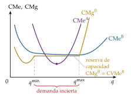
Simon (1955) va más lejos: con racionalidad limitada (conocimiento parcial de cada situación y objetivos y valores propios, que no coinciden con los de la organización), los directivos no maximizan nada, sino que buscan resultados satisfactorios, y las decisiones de la empresa salen de la negociación entre grupos con objetivos distintos (Cyert y March, 1963).↩︎
La información asimétrica puede dar lugar a selección adversa (información oculta antes del contrato, como en el mercado de coches de segunda mano) o a riesgo moral (acción oculta después del contrato, como el asegurado imprudente). La relación entre propietarios y directivos es sobre todo de riesgo moral [ver tema 3.A.13].↩︎
Sin empresa, el producto más sencillo exigiría una red de contratos entre productores independientes: si un bien requiere 5 procesos y cada productor contrata con los otros 4, hacen falta 10 contratos; si uno de ellos se convierte en empresa y emplea a los demás, bastan 4, y cada uno es un contrato de empleo, abierto, en el que el trabajador acepta la autoridad del empresario dentro de ciertos límites.
↩︎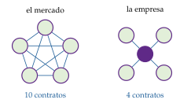
Williamson se doctoró en 1963 en el Carnegie Institute of Technology, con Simon, Cyert y March, de quienes toma la racionalidad limitada y el estudio de las organizaciones (Williamson, 2009); de Coase hereda la pregunta, pero no fue alumno suyo.↩︎
La integración vertical tiene además un motivo de precios, la doble marginalización (Spengler, 1950): integrados, venderían la cantidad de monopolio; separados, la cadena produce menos, cobra más y gana menos [ver tema 3.A.17].↩︎
El IHH es mejor en teoría, porque usa todas las cuotas y pesa más las grandes; la ratio de concentración se usa más en la práctica porque solo exige conocer las cuotas de las mayores empresas. Las autoridades usan el IHH para filtrar las concentraciones. En Estados Unidos, las directrices de 2023 presumen que una fusión reduce sustancialmente la competencia si deja un mercado muy concentrado (IHH superior a 1.800) y eleva el índice en más de 100 puntos, o si crea una empresa con más del 30 % de cuota y eleva el índice en más de 100 puntos (U.S. Department of Justice y Federal Trade Commission, 2023); son los umbrales de 1982, que las directrices de 2010 habían subido a 2.500 y 200 (U.S. Department of Justice, 1982; U.S. Department of Justice y Federal Trade Commission, 2010), y la FTC confirmó en 2025 que las de 2023 siguen en vigor (Federal Trade Commission, 2025). En la Unión Europea, las directrices de 2004 consideran improbables los problemas si el IHH tras la fusión no llega a 1.000, si está entre 1.000 y 2.000 y sube menos de 250 puntos, o si supera 2.000 y sube menos de 150 (Comisión Europea, 2004); el borrador de 2026, que la Comisión prevé aprobar a finales de año, mantiene esos umbrales (Comisión Europea, 2026b).↩︎
Ejemplos: el oligopolio de las agencias de calificación, al que las exigencias regulatorias dan una ventaja difícil de igualar (S&P, Moody’s y Fitch tienen el 92 % del mercado de la Unión Europea, con un IHH de unos 3.600, según European Securities and Markets Authority (2025)); o la limitación de las licencias de vehículos de alquiler con conductor a 1 por cada 30 de taxi, que según el Tribunal de Justicia de la UE restringe la libertad de establecimiento y solo cabe si es adecuada y proporcionada a fines de interés general (Tribunal de Justicia de la Unión Europea, 2023).↩︎
Para la escuela austriaca y para Schumpeter, el poder de mercado temporal es el premio de la innovación (anexo A) [ver tema 3.A.44].↩︎
Una síntesis de las definiciones, en McAfee, Mialon y Williams (2004).↩︎
Con demanda lineal, \(p(Q)=\alpha_0-bQ\), y costes \(C(q)=\mathrm{CF}+c\,q\), el entrante elegiría su producción frente a la demanda residual \(\alpha_0-bq_{\mathrm I}-bq_{\mathrm E}\) y ganaría \((\alpha_0-c-bq_{\mathrm I})^{2}/4b-\mathrm{CF}\); no entra si \(q_{\mathrm I}\geq\big[\alpha_0-c-2\sqrt{b\,\mathrm{CF}}\big]/b\), y el precio límite es \(p^{L}=c+2\sqrt{b\,\mathrm{CF}}\): el margen que se puede sostener crece con el coste fijo y con la pendiente de la demanda. En ese punto, la demanda residual del entrante es tangente a su coste medio, \(c+\mathrm{CF}/q_{\mathrm E}\).↩︎
\(\theta\) es aquí un parámetro local, no el coeficiente de aversión al riesgo. En el duopolio con variación conjetural \(v=\partial q_j/\partial q_i\), la condición de cada empresa es \(p+q_i\,p'(Q)(1+v)=\mathrm{CMg}_i\) y, con simetría, \(\theta=(1+v)/2\): \(v=0\) es Cournot, \(v=-1\) competencia y \(v=1\) colusión.↩︎